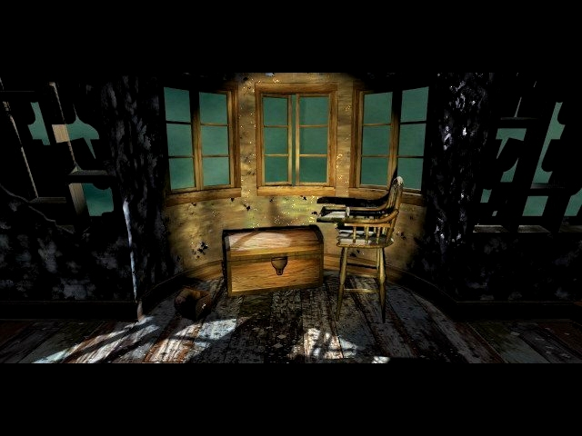
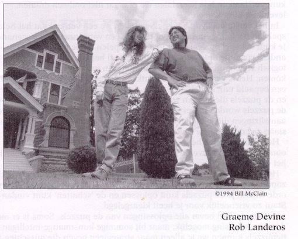

"Never doubt the power of this house!"
This room is dedicated to the creators of the game. I found out that Rob Landeros, Greame Devine and George Sanger are nice people. Talking to a fan, who had nothing to give back. I didn't write for a magazine or a much visited on-line magazine. Still, they took the time to answer my questions, I don't see that often, so that's why I would like to say thanks to the guys behind the game for creating such a cool game and being nice.
Who is Rob Landeros?
Rob Landeros was the man who was responsible for the concept and the design of both the
7th guest and the 11th hour. He likes to combine different arts in the game, from his point
of view, a company must contain writers, graphic artists and programmers. They each do what
there best at, when a writer starts designing graphics, there's trouble. He likes to work
with artist who are good with conventional media. "I would never hire someone who couldn't show
me a map which shows that he or she can draw."
Before and after...
1988 Rob used to work at Virgin at Research and Development. He had to look at McDonald games. Rob: What am I doing here? Rob left Trilobyte after 'Clandestiny', he formed a company with David Wheeler who directed the movie scenes in the 11th hour and Clandestiny. The company is called Aftermath, a link can be found in the Chapel. Aftermath made one game so far, Tender Loving Care. You can read an interview with Rob in the room of Martine Burden.
Who is Greame Devine?
Greame was the main programmer and developed the concept in the seventh guest together with
Rob, they started the company Trilobyte. He created 'Groovie' a program which the 11th hour
uses to compress moviefiles.
Before and after...
Greame Devine worked at Virgin as well, he met Rob there. They didn't have the space to show creativity. Greame: Boring.
With the seventh guest plan they got backup from Virgin to start a company, Trilobyte.
After Rob left Greame became president of Trilobyte until the end, last year the final curtain
fell. Now he's working at Id Software, he worked on Quake 3.
Who is Matthew Costello?
He wrote the script for both the seventh guest and the 11th hour. The script of the seventh
guest was made into a book. That's all I know about him.
Who is Robert Stein III?
He was the main 3d artist on the seventh guest and the 11th hour. He has a Stauf t-shirt.
Before and after...
He used to work at Manley & associates as an illustrator, but Greame and Rob asked him to go the Trilobyte. I don't know where he works now.
Who is George Sanger?
George made the music for the two games. He lives on a ranch in Texas. He drives a Rolls.
His artist name is 'the Fat Man'. He has made music for lots of games, He also released audio cd's. If you
want to read an interview with the man, check out my seventh guest site, the link can be
found in the chapel.
Before and after...
George didn't work at Trilobyte, he was 'hired' to make the music. Before Trilobyte he made music. After Trilobyte he made music. As simple as that. His homepage is linked in the chapel.
Of course there where more people who created the 11th hour, David Wheeler, John Gaffey, James Yokota, Team Fat,
Preston Moser and Scruffy for instance. Helas, I can't talk about all those talented people, although I would
like to add that Scruffy is a cat and slept most of the time.

If you want to visit the secret room, click here .